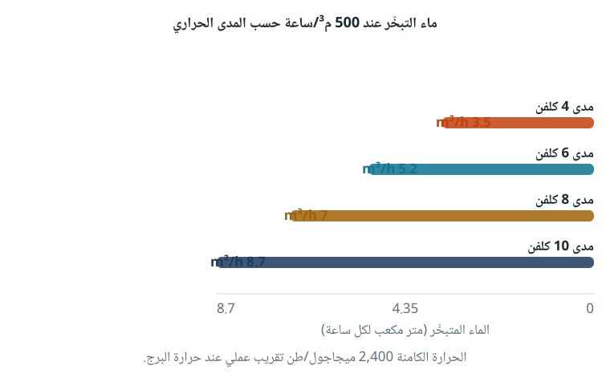

كيف يبرّد برج التبريد الماء بالتبخر؟
Evaporative cooling and water consumption in cooling towers
يتبخّر جزء من الماء أثناء ملامسته للهواء، فتقل درجة حرارة الماء المتبقي. في المثال المحسوب، يقدّر النموذج فقد التبخر بنحو 5.2 متر مكعب في الساعة.
يوزّع برج التبريد الماء على حشوة تزيد مساحة التلامس مع الهواء. يتبخّر جزء من الماء أثناء مروره، فتنتقل طاقة من الماء إلى الهواء ويخرج الماء المتبقي أبرد.
يمكن أن تنخفض درجة حرارة ماء الخروج دون درجة حرارة الهواء الجافة. والحد النظري في هذا النموذج هو درجة حرارة البصيلة الرطبة للهواء الداخل، التي تتأثر برطوبته.
كيف تعمل الظاهرة؟
التبخّر يستهلك حرارة كامنة كبيرة لكل كيلوغرام، فيأخذها من الماء المتبقّي. كفاءة البرج تُقاس بالاقتراب: الفرق بين ماء الخروج وحرارة البصلة الرطبة. كلما اتّسعت الحشوة وطال زمن التلامس قلّ الاقتراب، لكن الكلفة والمروحة ترتفعان. البرج يعمل على فرق صغير بين الماء والهواء، ولهذا يحتاج تدفق هواء كبيرًا لا مبادلًا معدنيًا.
العلاقة بالأرقام
الحرارة المسحوبة = ṁ·c·ΔT، والماء المتبخّر = الحرارة ÷ الحرارة الكامنة. عند 500 م³/ساعة ومدى 6 كلفن: 500×6×4.186 = 12,558 ميجاجول/ساعة، وبقسمتها على 2,400 ميجاجول/طن تعطي 5.23 م³/ساعة، أي 1.05% من التدفق. المدى 10 كلفن يعطي 8.7 م³/ساعة.
مفاهيم متقاربة
المدى والاقتراب رقمان مختلفان: المدى فرق حرارة الماء داخل البرج، والاقتراب فرق ماء الخروج عن البصلة الرطبة. برج بمدى كبير واقتراب كبير ما زال سيئًا، لأن ماءه يخرج ساخنًا أصلًا. تقييم البرج يحتاج الرقمين معًا مع حرارة البصلة الرطبة في اليوم نفسه.
حدود التطبيق
يفترض المثال حرارة تبخّر تقريبية قدرها 2,400 كيلوجول/كغ، وينسب إليها كامل الحمل الحراري في الحساب. يختلف الفقد الفعلي مع ظروف الهواء والماء. وتشمل مياه التعويض أيضًا القطرات المحمولة بالهواء وتصريف جزء من الماء للحد من تراكم الأملاح.

| الكمية | القيمة | المصدر |
|---|---|---|
| التبخّر عند مدى 6 كلفن و500 م³/ساعة | 5.2 m³/h | [1] |
| نسبة التبخّر من التدفق | 1.05 % | [1] |
| حرارة التبخر المستخدمة في المثال | 2400 kJ/kg | [1] |
| فرق درجة حرارة الماء في المثال | 6 K | [1] |
المصادر
- 1 OpenStax, College Physics 2e — Phase Change and Latent Heat — OpenStax. openstax.org/books/college-physics-2e/pages/14-3-phase-change-and-latent-heat · اطُّلع عليه 2026-11-16
- 2 OpenStax, College Physics 2e — Temperature Change and Heat Capacity — OpenStax. openstax.org/books/college-physics-2e/pages/14-2-temperature-change-and-heat-capacity · اطُّلع عليه 2026-11-16
- 3 Engineering ToolBox — Overall Heat Transfer Coefficients — Engineering ToolBox. www.engineeringtoolbox.com/overall-heat-transfer-coefficient-d_434.html · اطُّلع عليه 2026-11-16
راجعه: مراجعة آلية — ديوان المعرفة (أرقام محسوبة + مصادر متحققة) 2026-11-16 · 2026-11-16 · آخر تحديث 2026-11-17
رجوع إلى المقالات